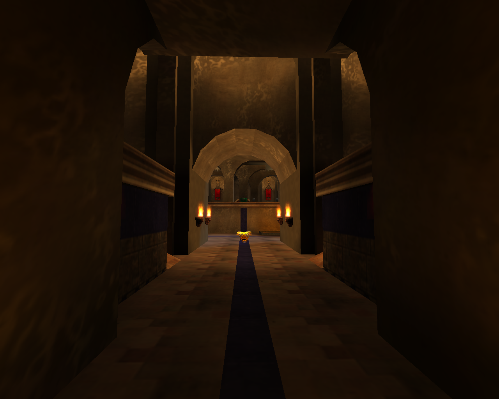
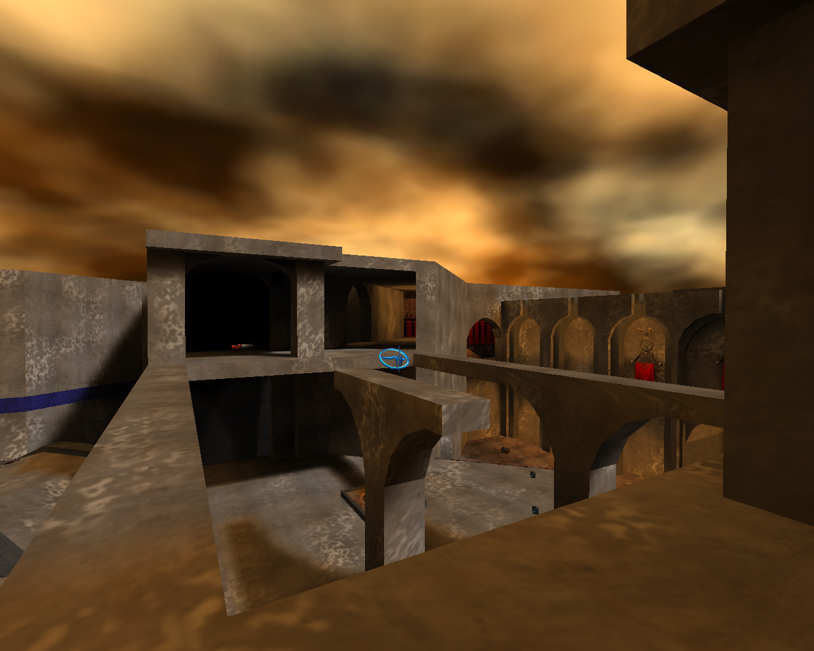
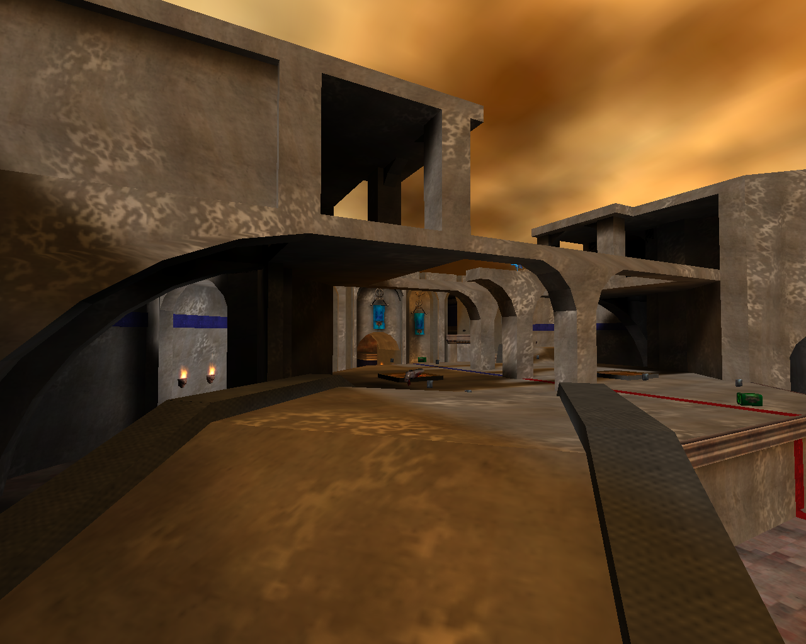
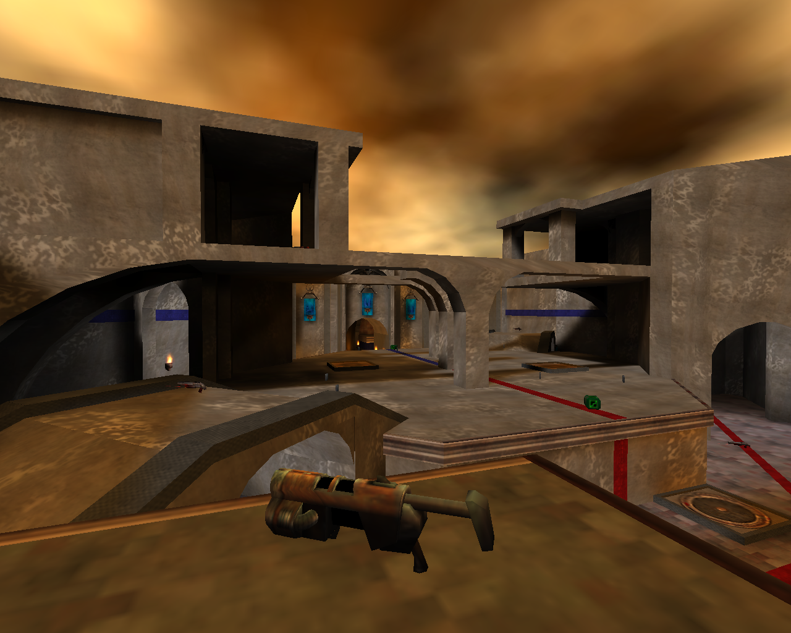
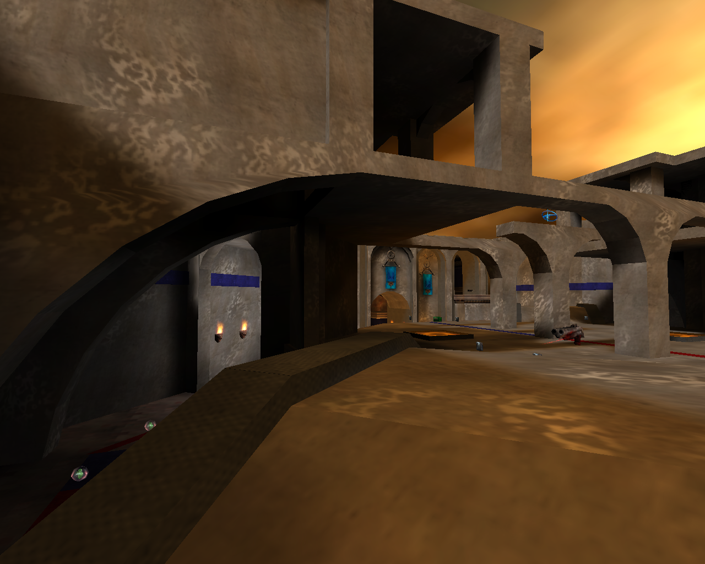

高台与优势位置
玩家需要花费更多时间才能到达高台。到达后能够获得更好的视野与战斗位置，但暴露程度也更高，更容易被敌方集火或从其他路线反制。
Cold Front
5v5 夺旗多人竞技射击地图
项目速览
Cold Front 是一张 5v5 夺旗多人竞技射击地图。地图以三条能够持续互相转换的路线和三层垂直战斗空间为基础，让玩家在安全、移动时间、信息、资源、空间控制与战斗优势之间不断做出交换。设计重点并非提供一条始终占优的路线，而是让每种选择同时带来收益与代价，并在双方建立优势后仍保留反制与转移空间。
地图由三层空间和三条主要路线构成。玩家可以在三条路线之间不断转换；不同楼层、桥梁、高台、隧道和中央平台形成连续的垂直战斗空间。路线之间的连接让玩家能够根据敌方位置、队友状态和目标压力快速改变策略，同时避免任何单一路线完全脱离整体战局。

玩家需要花费更多时间才能到达高台。到达后能够获得更好的视野与战斗位置，但暴露程度也更高，更容易被敌方集火或从其他路线反制。
玩家可以用更短时间到达战场中央，但沿途获得的资源更少，位置优势也相对较弱。作为交换，中央区域提供更多战场信息，并能更快向另外两条路线转移，使后续策略选择更灵活。
玩家需要花费更多时间绕行，路程相对安全，但更难及时支援队友，能够获得的信息也较少。在转移过程中，玩家几乎放弃了位置优势和空间控制权。
关卡以粗野主义的厚重混凝土和石材结构为基础，通过高耸墙体、悬挑平台和嵌入墙体的粗大支柱塑造堡垒感；同时融合哥特与科幻元素，并使用火炬、浮雕、红蓝阵营旗帜、金属管线和铆接表面建立中世纪与工业科技并置的视觉语言。
中央平台保持较高亮度，大部分建筑结构处于较低照度。阴影强化混凝土边缘和材质纹理，同时把玩家视线引向明亮区域。中央广场上方可看到被围合建筑框取的天空，以偏淡黄色的黄昏天光帮助玩家识别中心位置。









